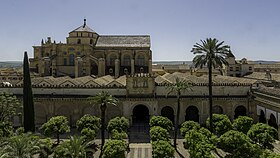

La Mezquita
La Mezquita-Catedral de Córdoba, conocida eclesiásticamente como Catedral de Nuestra Señora de la Asunción y de forma popular como la Mezquita, es la catedral de la diócesis de Córdoba ubicada en la ciudad española de Córdoba, Andalucía.
Según las fuentes islámicas, antes de la conquista musulmana de la península ibérica, en este lugar se encontraba la basílica de San Vicente,aunque las últimas excavaciones indican que se trataría más bien de un complejo episcopal. Los musulmanes habrían reutilizado parte de este templo cristiano hasta la llegada de Abderramán I, quien fundó el Emirato de Córdoba, y construyó la mezquita aljama al final de su vida, en 786. La mezquita fue objeto de ampliaciones durante el Emirato y especialmente durante el Califato de Córdoba: el primer califa, Abderramán III, añadió un nuevo minarete en 958, mientras que su hijo al-Hakam II realizó la parte más suntuosa, el nuevo mihrab y la macsura, realizados en 971. Llegó a cubrir un área de 23 400 metros cuadrados, con lo cual quedó como la segunda mezquita más grande del mundo en superficie, sólo por detrás de la mezquita de La Meca, y sólo superada en el siglo XVI por la Mezquita Azul (1588). El muro de la quibla no fue orientado hacia La Meca, sino 51.º grados hacia el sur, práctica habitual en las mezquitas de al-Ándalus.